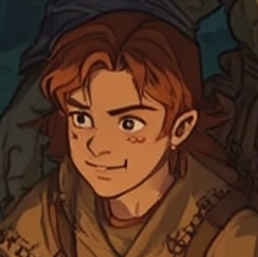

🧒 Fennel "Fen" Mossbottom / Halfling (or young Human) Ranger/Thief (Lvl 3)

🧾 Summary:
Despite his small stature, Fen has big dreams and is both a skilled scout and thief. He may sometimes appear naive but is actually sharp-witted. He loves exploring, finding new paths, and protecting his friends.
Role: Scout & Utility
🛡️ Abilities:
- Stealth, Investigation
- Basic healing, trap disabling
- Shortbow and dagger proficiency
🪓 Equipment:
- Light clothing, shortbow (not visible but practical)
- Adventurer's pack and small camp tools
🎲 Hobbies:
- Footprint tracking competitions
- Making friends with small animals
- Secretly decorating cloaks
- Collecting gaming dice
Note: "I may be small but I'm dangerous. My footsteps make no sound, enemies can't even see me."
© 2025 Fantasy Adventures - All Spells Reserved | Created by Umut Kurt